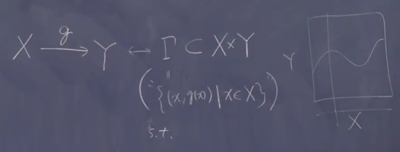

选择公理*
Table of Contents
做到本文档 org 可渲染、网页索引链接支持 网课链接：BV1T441117iw
1. 集合上的关系
目的『研究顺序在集合上操作』
是否符号主义？或者逻辑至上性
1.1. 偏序 partial order
定义: X a set A relation \(leq\) on X is partial order if:
- \(\forall x\in X,x\leq x\)
- \(\forall x,y\in X \left[ x\leq y \wedge y \leq x \Rightarrow x=y\right]\)
- \(\forall x,y,x\in X \left[ x\leq y\wedge y\leq z\Rightarrow x\leq z\right]\)
自反、传递、唯一限制
例子: 实数上小于等于；集合包含 \(\left( \mathbb{R},\leq \right),\left( \mathscr{P}(X),\subset \right)\) power set 幂集 \((P(X),\subset),P(X):=\left\{ A|A\subset X \right\}\)
有偏序 \((X,\leq)\) a poset 有 \(A\subset X\) 于是 A 可以继承这个偏序。
将这个集合和关系 \((X,\leq)\) 称作偏序集 poset (p artially o rdered set)
1.2. 链/全序集 chain/totally ordered set
呈序列，顺序一定，可以比大小
A poset is chain/totally ordered set if \(\forall x,y\in X \left[ x\leq y \vee y\leq x\right]\)
?不是图 ?完备性
If \((X,\leq)\) is a poset and \(A\subset X\) then A has a natural partial order induced by \(\leq\)
以下默认 \(\left( X,\leq \right)\) 是偏序集
~常常取子集讨论问题，比如定义域
1.3. 有界极大
\(b\in X\)
- b is an upper bound of A if \(\forall a\in A,a \leq b\)
- b is a greatest element of A if b is an upper bound and \(b\in A\)
符号说明： 上界 lub: the least upper bound ?inf 下界 glb: the greatest lower bound ?sup
\(x
极大元素:
?边界
b is a maximal element in X if
\(\forall x \in X,[b\leq x\Rightarrow b=x]\)
类似有极小元素
b is a minimal element in X if
\(\forall x \in X,[x\leq b\Rightarrow b=x]\)
～也就是没有超过这个元素限度的，它们像是不固定的边界
有限的集合，似乎都可以有偏序。
?为了不要有悖论，并且满足完备相容
1.4. 良序集 well ordered
非空集有最小
a chain \((X,\leq)\) if \(\forall A\subset X[A\neq \emptyset \Rightarrow A \text{ has a least element}]\)
比较 全序：可以比大小； 良序：有最小。
目前只知道 \(\mathbb{N}\) 是良序集， \(\mathbb{Z}\) 不是
1.5. 后继 successor
\(a\in X, \text{succ}_{(X,\leq)}(a)\) is the least element of \(\left\{ x\in X|a
?这里原视频用的 if
前任 predecessor
－我们的课不是要学英文
2. 定理
2.1. 定理 Bourbaki 不动点
Thereom a version of Bourbaki's fixed point thereom
我们不举很多的例子，自己要做的事。 例子课下书上去找
\((X,\leq)\) a poset in which every well-ordered subset has a lub, \(X\overset{f}{\rightarrow}X\) a map s.t. \(x\leq f(x)\) for every \(x\in X\) . \(\Rightarrow\) \(\exists a\in X,f(a)=a\)
证明见 Bredom Topology and Geometry Appendix B
含义 映射到不比自己小的，那么一定会有元素相等。
很特别的 只在这里用一下 集合论里面常见神奇的定理，属于人类聪明才智的体现， 过程不见得那么容易，透过阅读拓展理解
正整数在实数的状态
证明中使用术语： 初始线段？ initial segment \((X,\leq),a\in X\) \[\text{IS}_{X}(a):=\left\{ x\in X|x
2.2. 关于映射
一些规则
以前说映射是规则
集合论的定义： 映射对应直积的子集 \[X\stackrel{g}{\rightarrow}Y \leftrightarrow \Gamma \subset X \times Y\]

其中 \(\Gamma: \left\{ (x,g(x))|x\in S \right\}\) s.t. \(\forall x\in X\), \(\exists! y\in Y (x,y)\in\Gamma\)
－弹幕：集合论的函数从二元关系来， 二元关系从 ZFC 配对公理来
不存在具体规则
没有定义集合 ?像没有定义概率一样 知道有空集，可以谈元素属于
2.3. 选择公理的合集
2.3.1. 论述
\(\forall\) set \(S,\mathscr{P}_{0}:=\left\{ X|X\subset S\wedge X\neq\emptyset \right\}\) \(\exists f: \mathscr{P}_{0}/\emptyset\rightarrow S\) s.t. \(\forall X\in \mathscr{P}_0\) \(f(X)\in X\)
\(f:S\mapsto f(S)\)
存在映射，使得每一个非空子集都要选一个子集元素
A poset \((X,\leq)\) in which every well-ordered subset has a lub \(\Rightarrow\) X has a max element
偏序集中任子良序集有极大元素，偏序有最大
Every poset has a maximal chain
偏序集中有没有更大的子全序（再加入一个元素不是全序）
?极大线性无关
A poset in which every chain has a upper bound has a max element
偏序中的任子全序有上界，偏序有最大
Every set has a well-order
良序原理
总是变成像自然数的结构，有后继的观念
\(\forall surj. X\overset{f}{\rightarrow}Y\) \(\exists Y\overset{g}{\rightarrow}X\) \(f\circ g=id_Y\)
可以造一个，就去看哪个元素映射到 y ，就去拿这个作为 y 的值，这个过程牵扯到选择
A set \(A\), \(\alpha\in A\) given sets \(S_{\alpha}\neq \emptyset\) \(\exists f:A{\rightarrow}\cup\limits_{\alpha\in A}S_{\alpha}\) s.t. \(\forall \alpha\in A\) \(f(\alpha)\in S_\alpha\)
选择映射：从编号集到并集，满足每个编号都送到编号集里面
2.3.2. 说明
名称
4: Zorn's lemma(代数、分析，处理无限的？前提); 5: Zermelo's well-ordering principle(任何一个集合良序化问后继); 7: Axioms of choice
那个是定理？
定理是上述说法等价。
在良序（非空有最小）中讨论后继，
\(\min\left\{ x\in X|a
后继是在良序中讨论的。
在全序中，最多只有一个最大
在其中没有后继的最多一个元素，即最小的
不是总能用整数编上号（？找不到第一个）
有很多造良序的方法（从自然数出发），不知道一个集合上具体的良序法则？
?弹幕－字典排序法
? 自然数公理也是用这个的？
2.3.3. 证明
长路漫慢
\(7\Rightarrow 1\) \(\mathscr{P}_0=\left\{ S|S\in \mathscr{P}_0 \right\}\),
\((7)\Rightarrow \exists f:A\rightarrow \cup\limit_{\alpha\in A}S_{\alpha}\) s.t. \(f(\alpha)\in S_{\alpha}\)
\(\exists f:\mathscr{P}_0\rightarrow S\) s.t. \(f(S)\in S\)
\(1\Rightarrow2\) 需要用不动点
Assume that X has no maxinmal element i.e. \(\forall a\in X\) \(X_a:=\left\{ x\inX|a
\((1)\Rightarrow\) \(\exists f\) 箭头表示（？可交换）两者合成等同于 g
s.t. \(\forall X\subset S\neq \emptyset\) \(f(S)\in S\)
\(\forall a\in X\) \(g(a)=f(X_a)\in X_a\) and hence \(a
与不动点（如果）矛盾
\(2\Rightarrow3\) 偏序中所有良序子集有最小上界自己有最大 \(\Rightarrow\) 偏序中有极大链
极大，我们就看所有的链
Consider \(X=\left\{ C|C \text{ is a chain in P w.r.t.} \leq \right\}\)
Claim: Any totally ordered set in X has a lub in X If \(T\subset X\) is a totally ordered set, \(\cup_{C\in T}C\) is \(\text{lub}_XT\) .
\((2)\Rightarrow\) X has a max elememt i.e. a maximal chain in P.
\(3\Rightarrow4\) 偏序一定有最大链 \(\Rightarrow\) 每个全序子集有上界这个偏序有最大
\(3\Rightarrow\) \(\exists\) max chain C
By assumption, C has an upper bound ,say a, in X.
Then a is a max. element in X; otherwise
\(\exists x\in X\) \(a
4 \(\Rightarrow\) 5 偏序中每个链有极大，所以偏序有最大 \(\Rightarrow\) 偏序
Let Y be a set. Consider \(Y:=\left\{ A|A=(S_A,\leq_A \text{where} S_A \wedge \leq_A \text{well-ordered}) \right\}\) We define a relation \(\preceq\) on X.:
\(A\preceq B \Leftrightarrow A=B\) or A is IS of B i.e. $∃ $
片段
Claim:
- X has a maximal element w.r.t.
太难，暂时放一放
P23
证明有极大元素，极大是 A 不是 A
域 \(K\) 上线性空间 \(V\) ，线性无关组（子集），生成子空间（所有生成的组合） \(\text{span}_KS=\left\langle S \right\rangle\) 极大线性无关组；生成集： \(\left\langle S \right\rangle=V\)
- 存在极大线性无关
- 极大线性无关是一个生成集
理想，极大存在（Zorn）
3. 分析的应用
证明非常容易 不谈泛函分析
Hahn-Banach 定理 K(\(\mathbb{R}\))上向量空间X \(X \overset{p}{\rightarrow}\mathbb{R}\) 满足线性： \(f(x+y)=f(x)+f(y);f(tx)=tf(x)\)
对子空间 Y
4. 梳理一下课程
分析：
向量空间：结合律、零元、分配律 复分析－向量分析－傅里叶分析